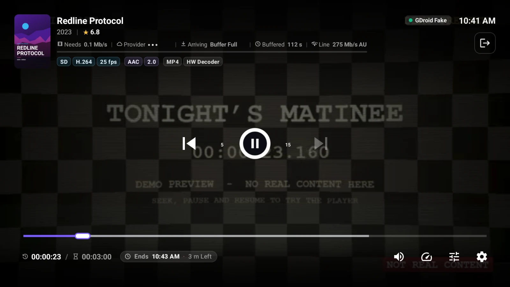

Cast to Your TV With Chromecast
Send a channel, movie or episode from Tachyon on your phone or computer to a Chromecast or Google TV — how to start, what can be cast, and fixes when it can't.

Start something on your phone or computer, and carry on watching it on the big screen. With Cast, the TV fetches the stream itself, so your phone is free and your service still sees just one connection.
Start Casting
- Put your phone or computer on the same Wi-Fi as the TV or Chromecast.
- Play a channel or a movie, and press Cast at the top of the player — or Cast on a movie's page.
- Cast To lists the devices found, TVs first. Pick yours.
- The phone shows Moving to … while the TV starts. A movie or episode carries on from where it was.
After that, pressing Play on anything that can be cast sends it straight to the TV, until you stop casting.
Controlling the TV
- Phone A casting bar above the bottom bar shows what the TV plays; it opens the cast controls, with Stop Casting.
- Desktop A bar at the bottom right shows what the TV plays, with pause, Stop Casting, and the TV's controls (seek, ±10 s and the TV's volume).
- One TV at a time: to switch to another, select Stop Casting first.
What Can Be Cast
The Cast button is always there, but dimmed when this copy can't play on a Chromecast. Press the dimmed button and it says why, with Watch Here. Common reasons:
- The stream needs a special User-Agent or headers that a Chromecast can't send.
- An MKV file with DTS sound, or a link only this device can reach.
- The built-in demo (its clips live inside the app).
- Live channels go to a Chromecast only with an H.264 picture: a channel in HEVC (often 4K) or MPEG-2 isn't sent — its HD version may cast.
If the TV refuses what it was sent, Couldn't Cast This says why and it plays on your device instead.
Settings
- Settings → Playback → Network → Cast Only on Wi-Fi (on by default): TVs are looked for only on Wi-Fi (a computer on a home network cable counts too). Off, they're looked for on any connection.
- Desktop On a Mac, allow Tachyon to look for devices on your local network the first time it asks.
Questions and Answers
Why is the Cast button dimmed?
Either no TV was found on your network, the device isn't on Wi-Fi, or this title can't play on a Chromecast. Press it to see which.
Does casting use a second connection?
No. Your phone or computer stops its own stream before the TV starts, so the service sees one connection, as always. See One Connection Per Service.
Can I cast from the TV app?
The TV app doesn't cast — it's already on the TV. Install Tachyon on the TV itself for the best picture and the remote. See Install Tachyon With Downloader.